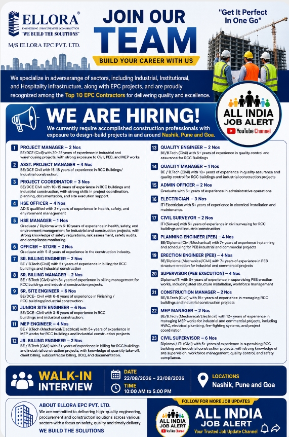

Ellora EPC Recruitment 2026 – Overview
Ellora EPC Pvt. Ltd. has announced multiple job opportunities for experienced construction and engineering professionals. The company is looking for suitable candidates for different positions related to construction, project management, quality control, billing, planning, safety, MEP, electrical work, administration and site execution.
According to the recruitment advertisement, the openings are available for professionals who have relevant experience in industrial, institutional, hospitality infrastructure and EPC projects. Candidates with experience in RCC buildings, industrial construction, PEB projects, MEP works, planning and scheduling, quality assurance, billing and site supervision may be suitable for the available positions.
Recruitment: Multiple Construction & Engineering Positions
Locations: Nashik, Pune and Goa
Interview: Walk-in Interview
Date: 22 August 2026 – 23 August 2026
Time: 10:00 AM – 5:00 PM
Available Job Positions
BE/B.Tech Civil candidates with approximately 20–25 years of experience in industrial and warehousing projects are required. Candidates should have strong exposure to Civil, PEB and MEP works.
Civil engineering professionals with around 15–18 years of experience in RCC buildings and industrial construction projects can apply.
Candidates with 10–15 years of experience in RCC buildings and industrial construction are preferred. Experience in project coordination, planning, documentation and site execution support is useful for this position.
ADIS-qualified professionals with 3+ years of experience in health, safety and environment management may apply.
Graduate or diploma candidates with approximately 6–10 years of experience in health, safety and environment management are required. Knowledge of safety regulations, risk assessment, safety audits and compliance monitoring is beneficial.
Graduates with around 5–8 years of experience in the construction industry can apply for the store-related position.
BE/B.Tech Civil candidates with 5+ years of billing experience in RCC buildings and industrial construction are preferred.
Candidates with BE/B.Tech Civil qualifications and 8+ years of billing management experience may be considered.
Civil engineering professionals with approximately 6–8 years of experience in finishing, RCC buildings and industrial construction projects can apply.
BE/DCE Civil candidates with approximately 3–5 years of experience in RCC buildings and industrial construction are required.
BE/B.Tech Mechanical or Electrical professionals with 5+ years of experience in MEP works for RCC buildings and industrial construction projects may apply.
Candidates with BE/B.Tech Civil and 3+ years of relevant billing experience are preferred. Knowledge of quantity take-off, client billing, subcontractor billing, BOQ and documentation can be useful.
BE/B.Tech Civil candidates with 5+ years of experience in quality control and quality assurance for RCC buildings are required.
BE/B.Tech Civil candidates with 10+ years of experience in quality assurance and quality control for RCC buildings and industrial construction projects can apply.
Graduates with 5+ years of experience in administrative operations may be suitable for this position.
ITI Electrical candidates with 5+ years of experience in electrical installation and maintenance are preferred.
ITI Survey candidates with 5+ years of experience in civil surveying for RCC buildings and industrial construction may apply.
BE/Diploma Civil or Mechanical candidates with 7+ years of experience in planning and scheduling for PEB industrial and commercial projects are preferred.
BE/Diploma Mechanical or Civil candidates with 7+ years of experience in PEB structure erection for industrial and commercial projects can apply.
Diploma/ITI candidates with 5+ years of experience in supervising PEB erection works, including steel structure installation and workforce management, are required.
BE/B.Tech Civil professionals with approximately 15+ years of experience in managing RCC buildings and industrial construction projects may apply.
BE/B.Tech Mechanical or Electrical candidates with 12+ years of experience in managing MEP works are preferred. Experience involving HVAC, electrical, plumbing, fire-fighting systems and project coordination is beneficial.
Diploma/ITI Civil candidates with 5+ years of experience in supervising RCC building and industrial construction projects may apply. Experience in site supervision, workforce management, quality control and safety compliance is useful.
Who Can Apply?
The recruitment is mainly suitable for experienced professionals from the construction and engineering sector. Candidates should carefully compare their educational qualification and total relevant experience with the requirements of the position before attending the interview.
Professionals from Civil Engineering, Mechanical Engineering, Electrical Engineering, MEP, Safety, Quality Control, Billing, Planning, Surveying, Administration and Site Execution backgrounds may find relevant opportunities in this recruitment drive.
Important Skills
Depending on the position, important skills may include project management, construction supervision, planning and scheduling, billing, quantity estimation, quality assurance, quality control, safety management, MEP coordination, PEB erection, site execution, documentation, workforce management and project coordination.
Walk-in Interview Details
Interview Timing: 10:00 AM to 5:00 PM
Corporate Location: Nashik
Hiring Type: Walk-in Interview
How to Apply
Interested candidates should prepare an updated CV/resume containing their latest educational qualification, total experience, current designation, project experience, technical skills and contact information. Candidates should also carry relevant documents when attending the walk-in interview.
Send Your CV / Contact
Email: surendra@elloraepc.com
Email: hr_admin@elloraepc.com
Candidates should verify the recruitment details and interview requirements before travelling.
Important Note for Candidates
Job seekers are advised to verify all recruitment information from the official company source before sharing personal documents or making any payment. Genuine recruitment processes generally do not require candidates to pay money for interview scheduling, job confirmation or offer letters.
Candidates should keep multiple copies of their updated resume and relevant educational and experience documents. It is also recommended to reach the interview venue on time and follow the instructions provided in the original recruitment advertisement.
The information published on this page is intended to help job seekers understand the recruitment opportunity. Job availability, interview schedules and requirements may change, so candidates should verify the latest information before applying.